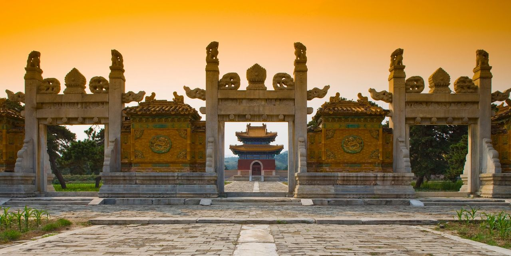

清西陵

清西陵（Western Royal Tombs of the Qing Dynasty），位于河北省保定市易县梁各庄西15公里处的永宁山下， [1] 离北京98公里 [2] 。清西陵是清代自雍正时起四位皇帝的陵寝之地，始建于雍正八年（1730年），完工于民国四年（1915年），其间185年。是现存规模宏大，保存最完整，陵寝建筑类型最齐全的古代皇室陵墓群。 [3]
清西陵共有14座陵墓，包括雍正的泰陵、嘉庆的昌陵、道光的慕陵和光绪的崇陵，还有3座后陵。此外，还有怀王陵、公主陵、阿哥陵、王爷陵等共14座。其建筑形式体现着封建的典章制度，帝陵和后陵均用黄色琉璃瓦盖顶；妃嫔、公主、王爷园寝则以绿琉璃瓦或灰布瓦盖顶。
清西陵面积达800余平方公里 [4] ，建筑面积达5万余平方米，有宫殿1000余间，石雕刻和石建筑100余座。 [5] 清西陵建筑基本上是相沿明代帝后妃陵寝建筑样式修筑而成，它依据清官式作法，在严格遵守森严等级制度的同时，又不拘泥于典制，具有很强的创造性。 [6]
清西陵众多建筑有彩画与雕刻，宫殿多施旋子彩画，庙宇牌坊多施和玺彩画，行宫、住宅多施苏式彩画，雕刻以龙凤最多。整个建筑群反映出清代建筑艺术的高超水平和民族风格。 [5]
1961年，清西陵被国务院列入第一批全国重点文物保护单位， [7] 2000年11月，清西陵被第24届世界遗产委员会列为世界文化遗产和《世界遗产名录》，2001年1月评为国家首批AAAA级景区。2019年12月31日，文化和旅游部确定清西陵为国家5A级旅游景区。 [8]